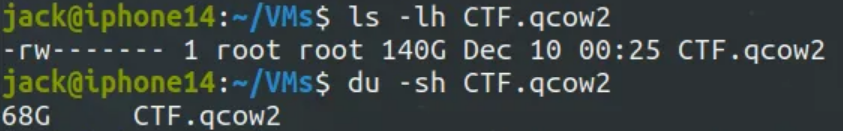

qcow2 Virtual Machine Image Compression
KVM qcow2 Image Compression
Have you ever encountered your QEMU-KVM Virtual Machine Image in qcow2 format eating your storage space?
If yes, today we will solve that problem. The problem is due to thin provisioning
QEMU-KVM Virtual Machine(VM) Images take extra space with snapshots as original image size increases. We will restore the image to minimal size, deleting extra space occupied by snapshots.
Thin Provisioning
When a snapshot is taken, the changes made to the VM after the snapshot are stored in a separate file. With thin provisioning, the snapshot size can increase dynamically as more data is written to the VM after the snapshot is taken. This means that the snapshot will only consume additional space as changes occur, rather than reserving a fixed amount of space upfront.
General
- Snapshots acquire double space that of virtual disk and don’t erase back automatically.
- Delete Snapshots using CLI(qemu-img)
- Always try to use cli qemu for creating VMs and operating them
ls cannot understand thin provisioning , use Disk Utility du instead
Here is my sample disk size: 
qemu-img
qemu-img info Qubes.qcow2
Deleting Snapshots
sudo qemu-img snapshot -d snapshot2(name) CTF.qcow2
virt-sparsify
Free space within the disk image can be converted back to free space on the host. Check documentation for all features.
sudo virt-sparsify -v -x --in-place CTF.qcow2sudo virt-sparsify CTF.qcow2 compressedCTF.qcow2
Before Compression

After Compression